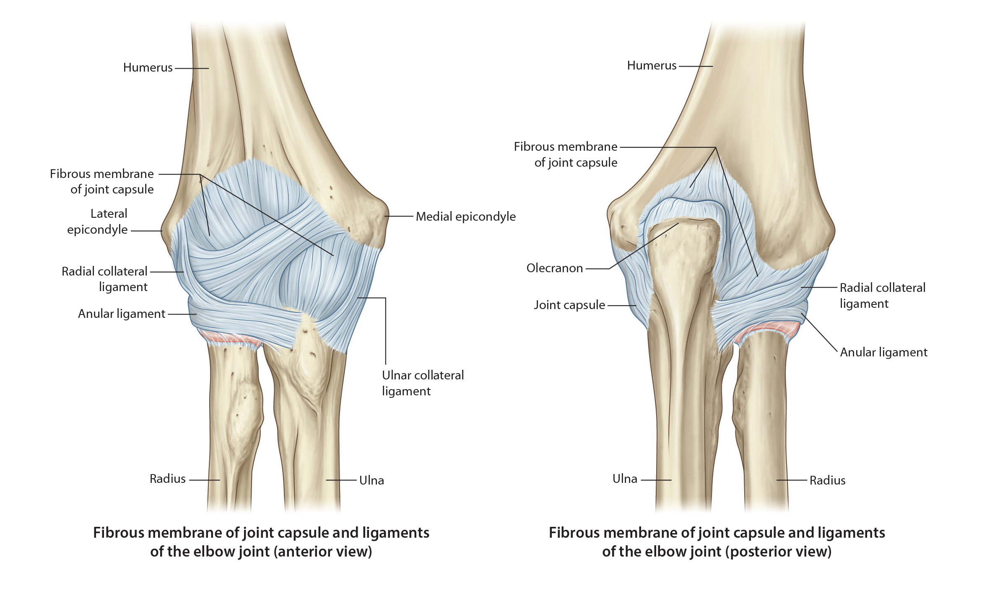

Lab3 - Module 2 - Anatomy of the Arm and Forearm: Page 4 of 11
Ligamentous Stability of the Elbow
|  |
| Tap on image to enlarge |
| TheLigaments of the Elbow are not visualized on the 3D model. Use the accompanying diagrams to help you with the locations in three dimensions.. |
| • Joint Capsule – has both fibrous and synovial components. The capsule is thicker anteriorly than posteriorly. This orientation allows stability in extension, varus, and valgus. The capsule surrounds all three joints, making it very extensive with several redundancies. |
| • Ulnar Collateral Ligament (UCL) (aka Medial Collateral Ligament) - Primary stabilizing ligament to valgus force around the elbow. Some portion of the ulnar collateral ligament is taut in all joint positions. Greater number of valgus stresses imposed on the medial aspect of the elbow. This ligament has three bands: |
|
Anterior Oblique Band - runs from the medial epicondyle of the humerus to the coronoid process of the ulna. It is the main restraint to valgus motion in elbow extension. It also restrains pronation of the ulna on the humerus. Posterior Band - runs from the medial epicondyle of the humerus to the olecranon process of the ulna. It is the main restraint to valgus motion when the elbow is flexed >60° Transverse Band - runs from the coronoid process of the ulna to the olecranon process of the ulna. This band helps support the medial capsule. |
| • Lateral (Radial) Collateral Ligament - varus stresses are rare at the elbow joint. Therefore this ligament is not as significant to the support of the joint as the UCL. The majority of the support comes from the structure of the joint itself. The ligament arises from the lateral epicondyle and inserts into the annular ligament around the radial head. It also helps support the annular ring. Notice that this ligament connects bone to ligament, not bone to bone as most ligaments do. |
| • Annular (Ring) Ligament - holds the radius up against the ulnar into the elbow joint. Allows pronation and supination (rotation) to occur the radioulnar joint. |